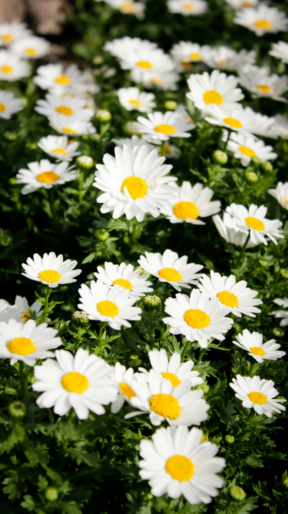
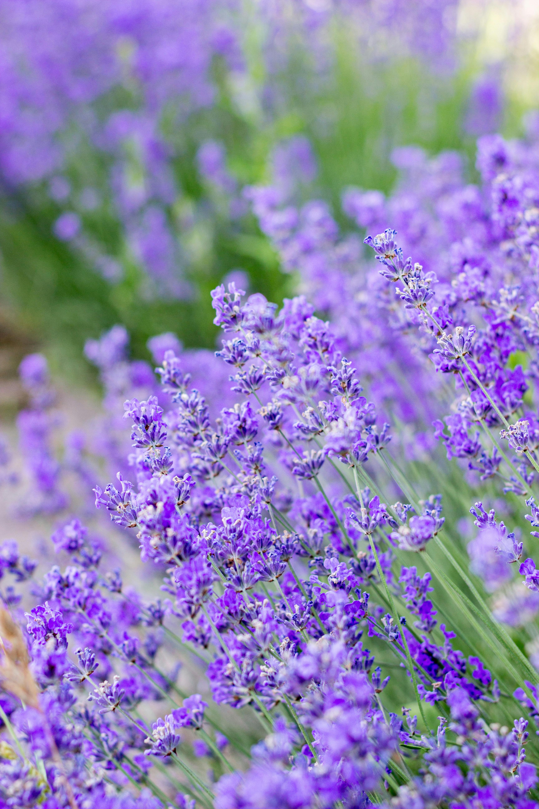
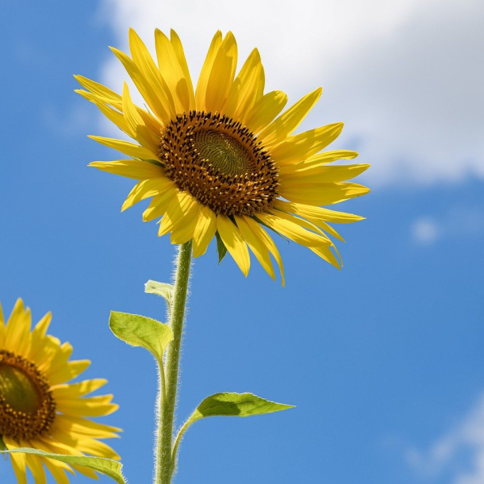
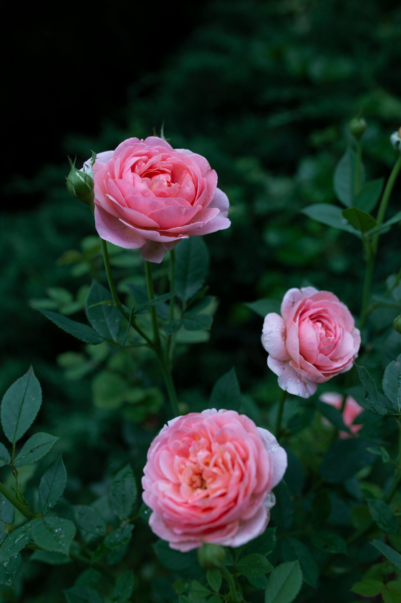
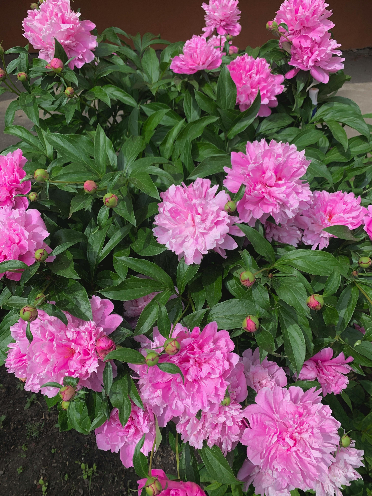
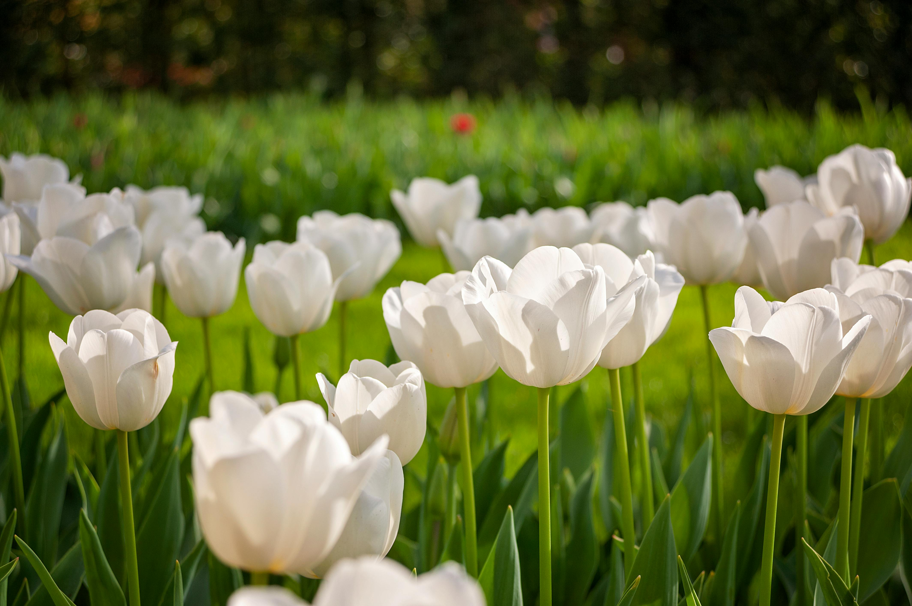

Margaretă
Frumusețe sinceră și simplitate naturală.
🌷 Unele flori spun lucruri pe care cuvintele le spun prea greu.
Deschide orice floare ca să o vezi mai mare și să vezi gândul ei într-un mod mai frumos.
🙏🙂"Poate nu am găsit toate florile exact așa cum sunt aici...
dar cred că, privit altfel, păstrează același gând." ...în curând ✈️...

Frumusețe sinceră și simplitate naturală.

Liniște și pace.

Lumină și căldură.

Gingășie, respect și frumusețe delicată.

Feminitate, eleganță, profunzime.

Sinceritate, curăție, simplitate frumoasă.